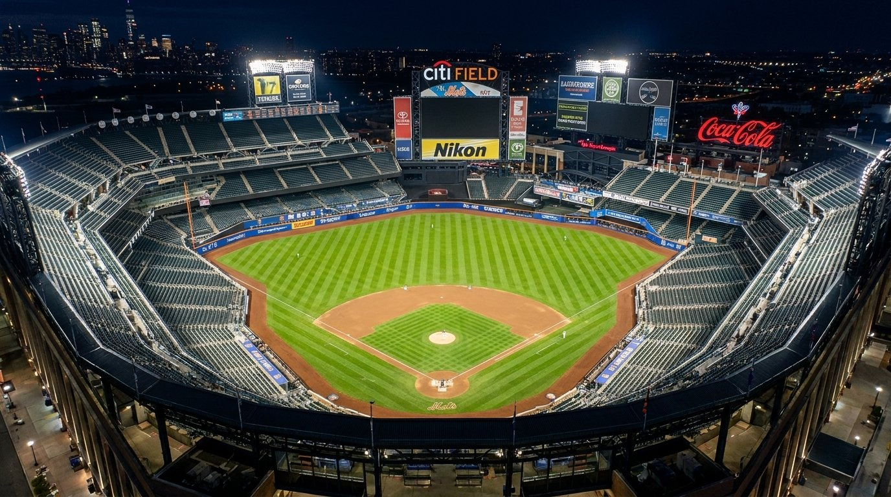

All-Time Mets Depth Chart
Vote on the best Mets by position, compare the top names on the diamond, and switch between position view and the overall top 10.
The all-time Mets depth chart lets fans vote for the best player at each position, compare vote totals, and browse leading candidates with career stats and awards.
Rankings start with MetsMoneyline's curated baseline scores. Fan voting is shared online and adjusts the rankings over time. To limit spam, each browser can vote once per player per day. Write-ins are reviewed before appearing publicly.

Position:
Showing: All Positions
| Loading depth chart data... |
Write-In a Player
Write-ins are submitted for review before appearing publicly. Duplicate names at the same position are blocked.
Displayed scores include MetsMoneyline baseline ranking points plus live fan votes. You can add, switch, or remove one vote per player each day.